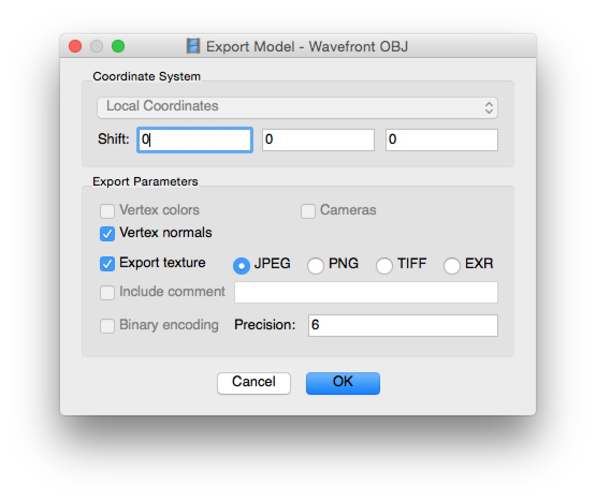
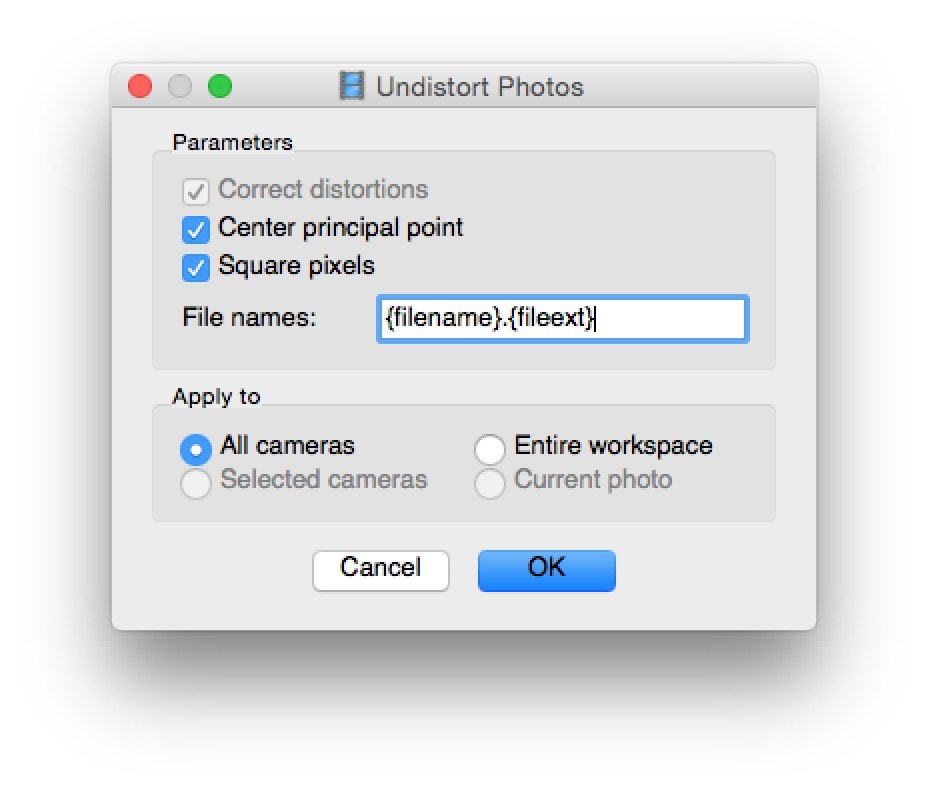

A complete model for the ULF Renderer must provide the following three things:
- Surface Geometry (as an OBJ)
- Camera views (with camera distortion removed) as JPGs, PNGs or TIFFs.
- Camera location and orientations as a PhotoScan .xml file or a .vset file.
Any program that can provide these three things can in theory be used with the renderer however, we have constructed it with Agisoft Photoscan in mind (which does provide the necessary info). Furthermore, only certain formats for each of these items are supported.
Loading a PhotoScan Model
If you have a fully processed model in PhotoScan you can export the appropriate data with the following steps:
Before Starting
- Make sure you have completed processing and fully generated the geometry for the object
- If you have multiple chunks, you will only be able to export and render one of them. You can combine them into one prior to exporting.
- The chunk you want to export must not have any transformation applied to it. Look for [R] next to the chunk name. If you see this, right click the chunk and say 'Reset Transform'. Caution, this will loose all object orientaiton and scale so save before you do this and then avoid saving the PSZ afterwards.
Exporting data:
- Right click the desired chunk and select 'set active'
- Right click the chunk again and select 'Export->Export model'
- Export as a 'Wavefront OBJ' file with the settings shown
- If you are using the non-pro verison of PhotoScan your options will be slightly different but the differences are unimportant.

- Select 'Tools->Export->Export Cameras'
- Export the cameras as 'PhotoScan XML'
- Select 'Tools->Export->Undistort Photos'
- Make sure the settings match the window shown below
- You may provide a different file extension if you like (the renderer will search for other file types), but DO NOT modify the {filename} part.

Loading into the Renderer:
- Start the ULF Renderer and select 'File->Load single model'
- Make sure the file type is set to 'PhotoScan XML' and select your xml file
- follow the prompts and provide the obj file and the directory with undistorted photos
Using a prepared Example
It is possible to prepare all of this data and collect it into a single ZIP archive. We have provided several examples of this for you to try out. Doing so requires the camera pose information to be provided as a .vset file. The documentation for this file format is still yet to be created but there are plans to support exporting it directly from the renderer. For now, this part is only intended for a pre-existing .zip archive provided with the renderer.
Loading into the Renderer:
- Start the ULF Renderer and select 'File->Load single model'
- Change the file type to .zip archive
- Select the prepared zip file